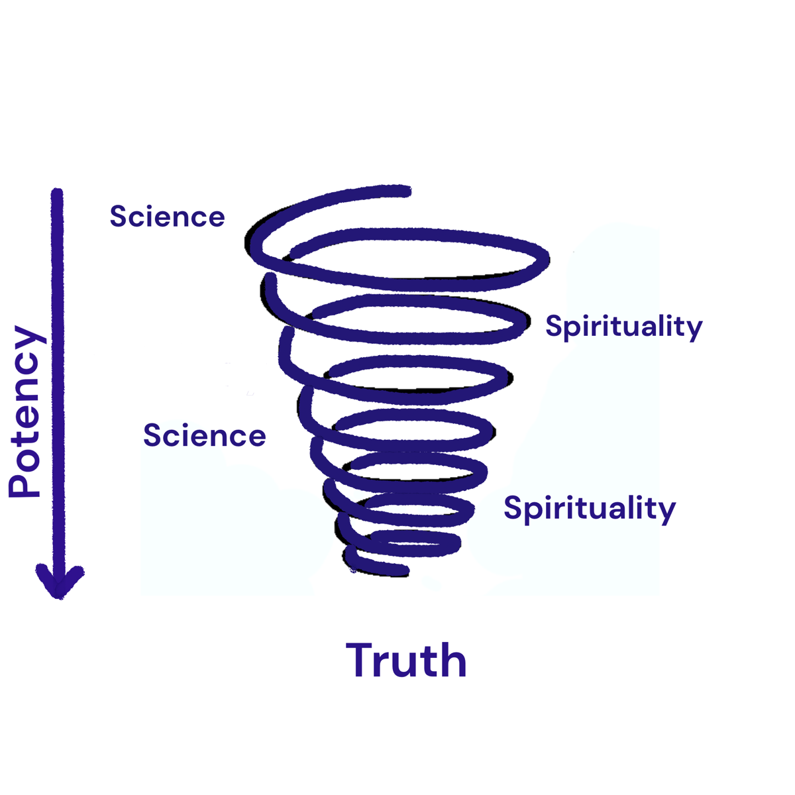

Aim to Be Directionally Correct
My blog started in an effort to reverse engineer Elon Musk's worldview. In the process, I learnt fundamental truths about life. It changed me as a person.
Every area of life has fundamental principles behind it.The most fundamental principles are internalized by testing them against reality. Some fundamental truths in areas:
- Reasoning: Mental Latticework + Fundamentals of Knowledge
- Writing: Clarity + Novelty + Exploration
- Learning: The Art of Learning (Book)
- Persuasion/Sales: Cialdini's Principles (Book)
- Wellness: Emotional + Mental + Physical health
- Emotional Health: releasing solidified emotions + making the mind quiet + Good relationships
- Mental Health: Externalizing the mind
- Physical Health: Understanding your body + nutrition + exercise + sleep
Peter Thiel, in Zero to One, says secrets lay hidden in plain sight. Startups are experiments to discover Truth in an area (secrets), create value for society, and capture a portion of it.
Secrets remain hidden because we identify with our minds.
The mind is besotted with biases and bad reasoning. The mind is a network of thoughts, running on an organic reasoning engine. It's outdated.It evolved to improve the probability of survival. It's the nature of the mind to put parts of its identity into objects, people, events in hopes of making it happy. Spikes of happiness are chemicals filling up receptors in the brain. The mind mistakes this for contentment, for fulfilment, and keeps pursuing external gratification. Observing the functioning of the mind objectively lets us see how wrong it can be, and correct for our biases. We need to learn to make it less wrong.
To do this we need to quieten the mind. Make it our instrument, rather than it controlling us. The mind does not have to worry about the organism's survival anymore. We can use it for the pursuit of Truth.
Internalizing principles in multiple areas lets you see further into the future. That's what a good investor is able to do - be non-consensus and right. Non-consensus, because nearly everyone else is wrong. Right, because they're reasoning based on truth, using the principles they have discovered. We're all investors at our core: investing our time and energy for something (pursuing goals, fun, profit). We'd be better investors if we loved the Truth.
This is what I call being directionally correct.

The first important area for the mind to conquer is itself. Release emotional blockages in your body. Love yourself(your Self) regardless of outer circumstances - taking care of oneself lets us be there for others. Clarify your thinking, and be honest with yourself. Question your assumptions. These activities free up energy and makes things fun. Aim to be in a state of effortless being, flow state, as often as possible.
Discover new truths by being receptive to it. Listen to the whispers of authors. Play the Infinite game. Reality doesn't really bother if one agrees to its principles or not - it goes on operating according to the laws of the universe. Test your ideas against reality.
Elon is successful because he is aligned with what is True. He tests his knowledge against Reality. His spirituality comes from science fiction. He has transcended the Ego, and is willing to fail publicly. He's trying to save humanity from itself.
Pursue the truth at progressively deeper levels in areas that spark your interest. Make your mind a powerful instrument. Aim for directional correctness in the direction of Truth. Use simplicity and potency, or leverage, as your guide.